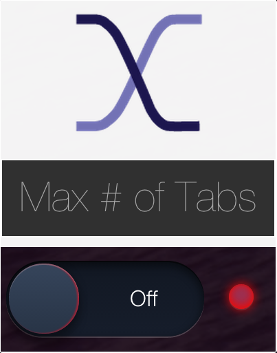

Tired of your browser being this much of a cluttered mess?
You're not alone. We're all addicted to tabs and in a fruitless search for a way to get our lives back. The search is fruitless no longer. Welcome to Tabvention.

Tabvention is a Chrome plugin that allows you to set yourself a maximum number of tabs to have open at one time. Go beyond this number, and the oldest tabs will be closed and safely bookmarked into a folder separated by date, like in the example screenshot below.
Perform a Tabvention - Available Now